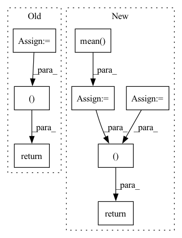

Pattern ID :39675
Before Change
Vc = V.conj().T
p = Vc @ p
B = Vc @ B
return Lambda, p, B, V
// Sanity check just to make sure those identities hold,
After Change
// Check skew symmetry
S_diag = np.diagonal(S)
Lambda_real = np.mean( S_diag) * np.ones_like(S_diag)
// assert np.allclose(Lambda_real, S_diag, atol=1e-3)
// Diagonalize S to V \Lambda V^*
Lambda_imag, V = eigh(S * -1j)
// Lambda, V = jax.jit(eig, backend="cpu")(S)
// Lambda, V = eig(jax.device_put(S, device=jax.devices("cpu")[0]))
p = V.conj().T @ p
B = V.conj().T @ B
return Lambda_real + 1j*Lambda_imag, p, B, V
// Sanity check just to make sure those identities hold,
In pattern: SUPERPATTERN
Frequency: 5
Non-data size: 8
Instances Fragment ID: 112793981
Project Name: srush/annotated-s4
Commit Name: 2d0d9418c9b118de5a3a72d78910f8db1ee7c451
Time: 2022-06-05
Author: albertfgu@gmail.com
File Name: s4/s4.py
M Class Name: AnonimousClass
N Class Name: AnonimousClass
M Method Name: make_DPLR_HiPPO(1)
N Method Name: make_DPLR_HiPPO(1)
M Parent Class:
N Parent Class:
M File Name: s4/s4.py
N File Name: s4/s4.py
M Start Line: 1112
M End Line: 1118
N Start Line: 1112
N End Line: 1126
Before Change
mean_valid_loss = np.mean(valid_losses)
valid_true_outputs = MultiLabelBinarizer().fit_transform(valid_true_outputs)
valid_pred_outputs = MultiLabelBinarizer().fit_transform(valid_pred_outputs)
valid_accuracy = metrics.accuracy_score(valid_true_outputs, valid_pred_outputs)
return mean_valid_loss, valid_accuracy
def test(self, model_name):
After Change
valid_accuracies.append(valid_accuracy)
mean_valid_loss = np.mean(valid_losses)
mean_valid_accuracy = np.mean( valid_accuracies)
return mean_valid_loss, mean_valid_accuracy
def test(self, model_name):
Fragment ID: 112793960
Project Name: devjwsong/transformer-translator-pytorch
Commit Name: 4097d9eb8241bdf6773e3d9ab62051c7f4ac851c
Time: 2020-04-30
Author: enflwodn@gmail.com
File Name: src/main.py
M Class Name: Manager
N Class Name: Manager
M Method Name: validation(1)
N Method Name: validation(1)
M Parent Class:
N Parent Class:
M File Name: src/main.py
N File Name: src/main.py
M Start Line: 122
M End Line: 153
N Start Line: 119
N End Line: 146
Before Change
model.eval()
class_num = data_loader.dataset.cls_num
conf_mat = np.zeros((class_num, class_num))
loss_sigma = []
path_error = []
for i, data in enumerate(data_loader):
inputs, labels, path_imgs = data
// inputs, labels = data
inputs, labels = inputs.to(device), labels.to(device)
outputs = model(inputs)
loss = loss_f(outputs.cpu(), labels.cpu())
// 统计混淆矩阵
_, predicted = torch.max(outputs.data, 1)
for j in range(len(labels)):
cate_i = labels[j].cpu().numpy()
pre_i = predicted[j].cpu().numpy()
conf_mat[cate_i, pre_i] += 1.
if cate_i != pre_i:
path_error.append((cate_i, pre_i, path_imgs[j])) // 记录错误样本的信息
// 统计loss
loss_sigma.append(loss.item())
acc_avg = conf_mat.trace() / conf_mat.sum()
return np.mean(loss_sigma), acc_avg, conf_mat, path_error
After Change
outputs = model(inputs)
loss = loss_f(outputs.cpu(), labels.cpu())
loss_list.append(loss.item())
loss_mean = np.mean(loss_list)
acc_batch_list.append((1 - np.abs(outputs.cpu().detach().numpy() - labels.cpu().detach().numpy())))
ocean_acc = np.concatenate(acc_batch_list, axis=0).mean(axis=0)
acc_avg = ocean_acc.mean()
return loss_mean, ocean_acc, acc_avg
Fragment ID: 112793948
Project Name: liaorongfan/deeppersonality
Commit Name: 565a883600a2f9be36416c98383ef54294da8ab1
Time: 2021-05-23
Author: 15670381505@163.com
File Name: dpcv/engine/portrait_model_trainer.py
M Class Name: ModelTrainer
N Class Name: ModelTrainer
M Method Name: valid(4)
N Method Name: valid(4)
M Parent Class: object
N Parent Class: object
M File Name: dpcv/engine/portrait_model_trainer.py
N File Name: dpcv/engine/portrait_model_trainer.py
M Start Line: 60
M End Line: 87
N Start Line: 54
N End Line: 71
Before Change
num_protypes = self.num_prototype, margin = self.margin)
con_loss = con_loss.unsqueeze(0) // for multi-gpu setting
return outputs, con_loss
def core(self, it, fc_feats_ph, att_feats_ph, memory, state, mask, query_matrix, cmn_masks, labels=None):
if len(state) == 0:
ys = it.unsqueeze(1)After Change
num_protypes = self.img_num_protype, margin = self.margin)
txt_con_loss = my_con_loss(self.text_protype, num_classes= self.num_cluster,
num_protypes = self.text_num_protype, margin = self.margin)
img_con_loss = img_con_loss.unsqueeze(0) // for multi-gpu setting
txt_con_loss = txt_con_loss.unsqueeze(0) // for multi-gpu setting
bce_loss = self.bce_loss(self.img_feat_head(torch.mean( att_feats, dim=1) ), labels)
return outputs, img_con_loss, txt_con_loss, bce_loss
def core(self, it, fc_feats_ph, att_feats_ph, memory, state, mask, query_matrix, cmn_masks, labels=None):
if len(state) == 0:
ys = it.unsqueeze(1) Fragment ID: 112793973
Project Name: markin-wang/xpronet
Commit Name: e2950ef11d4c64aa7ecf4c2bd81253ba9eb56e6c
Time: 2021-11-25
Author: cserwj@gmail.com
File Name: modules/base_cmn.py
M Class Name: BaseCMN
N Class Name: BaseCMN
M Method Name: _forward(6)
N Method Name: _forward(6)
M Parent Class: AttModel
N Parent Class: AttModel
M File Name: modules/base_cmn.py
N File Name: modules/base_cmn.py
M Start Line: 458
M End Line: 463
N Start Line: 499
N End Line: 508
Before Change
X_train_iso = X_train[num_cols].to_numpy()
return X_train_iso, ohe_enc
def get_n_test_splits():
return len(test_years)
After Change
X_train_iso = X_train[num_cols].to_numpy()
data_mean = X_train_iso.mean( 0) [None,:]
data_std = X_train_iso.std(0)[None,:]
data_std[data_std==0] = 1
return X_train_iso, ohe_enc, data_mean, data_std
def get_n_test_splits():
return len(test_years)
Fragment ID: 112793957
Project Name: bit-ml/anoshift
Commit Name: 3fc5c9e58886164dbd1b67777655f2666f7cdca9
Time: 2022-10-10
Author: haller.emanuela@gmail.com
File Name: baselines/load_anoshift.py
M Class Name: AnonimousClass
N Class Name: AnonimousClass
M Method Name: get_train(2)
N Method Name: get_train(2)
M Parent Class:
N Parent Class:
M File Name: baselines/load_anoshift.py
N File Name: baselines/load_anoshift.py
M Start Line: 87
M End Line: 89
N Start Line: 87
N End Line: 93